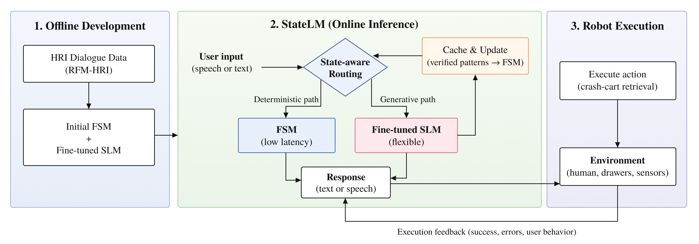
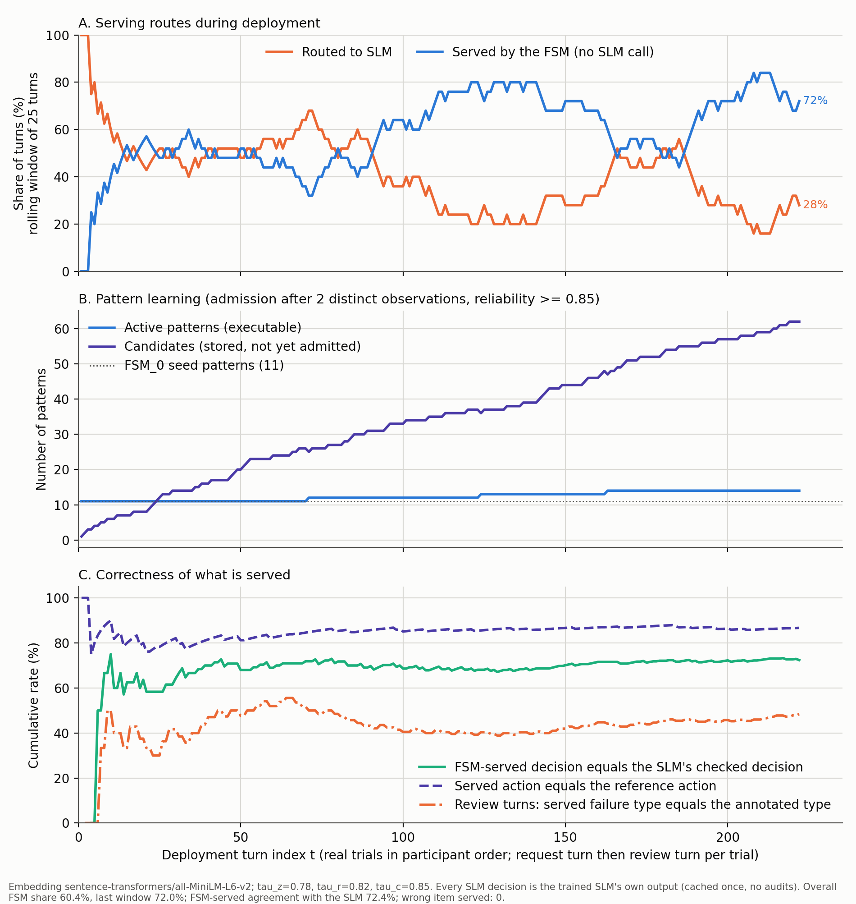
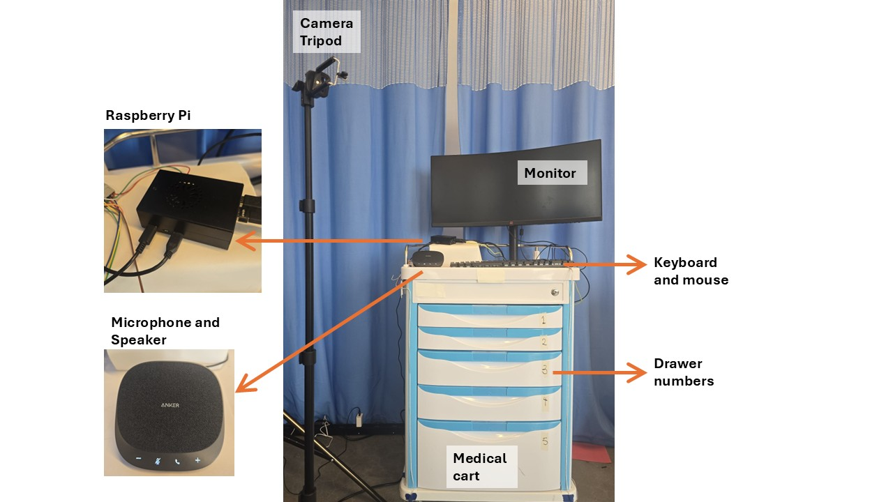

Low Inference Conversational Robots: Convergent Caching of Generative Behavior into Deterministic Dialogue Control
Under double-blind review
Abstract
Embodied conversational models enable privacy-preserving interaction, but existing approaches face a fundamental trade-off: deterministic models are predictable and offer low response latency but are inflexible, whereas language models handle linguistic variation at high inference cost. Hybrid systems often rely heavily on the generative component since real-world interactions are inherently unpredictable. In human-robot interaction (HRI), this matters when a robot must respond promptly while handling ambiguous requests and conversational failures. We study this tension in voice-guided crash-cart object retrieval, a controlled setting motivated by time-sensitive assistance.
We introduce StateLM, an end-to-end architecture that combines a data-induced finite-state machine (FSM), a fine-tuned small language model (SLM), state-aware routing, and efficient online caching. Its key contribution is a novel semantic caching that maps verified, recurring SLM outputs into the FSM, while preserving task-critical constraints. Unlike existing caching methods that primarily reuse model responses, our cache safely expands the FSM itself and explicitly targets convergence, meaning that major interaction patterns are absorbed by the FSM.
On the human-robot interaction (HRI) side, we present a single model (StateLM) that handles a broad range of challenges in an object-retrieval testbed: misspellings, ambiguities, unavailable items, and recovery from different types of intentionally induced robot failures. Recovery strategies are learned from user-preference data unlike existing hard-coded approaches. Furthermore, we evaluated the complete model in an embodied user study.
On unseen scenarios, StateLM's SLM calls fell from 100% to 30% as recurring patterns were mapped into the FSM. In a user study, 80% of StateLM turns used the FSM path at a median 1 ms, versus 11.1 s for SLM-path turns.
Contributions
- We introduced StateLM, an end-to-end architecture that combines a data-induced finite-state machine (FSM), a fine-tuned small language model (SLM), state-aware routing, and efficient online caching.
- Its key contribution is a novel semantic caching that maps verified, recurring SLM outputs into the FSM, while preserving task-critical constraints. Unlike existing caching methods that primarily reuse model responses, our cache safely expands the FSM itself and explicitly targets convergence, meaning that major interaction patterns are absorbed by the FSM.
- On the human-robot interaction (HRI) side, we present a single model (StateLM) that handles a broad range of challenges in an object-retrieval testbed: misspellings, ambiguities, unavailable items, and recovery from different types of intentionally induced robot failures, unlike typical studies that focus on one of these challenges.
- Recovery strategies are learned from user-preference data unlike existing hard-coded approaches.
- Furthermore, we evaluated the complete model in an embodied user study with 360 trials (StateLM, FSM-only, SLM-only).
| Method family | OnlineFSM grows during deployment | State-awarea pattern is reused only in the dialogue state it was learned in | Task-safetask-critical bindings (e.g., item and drawer) checked when added and at every reuse | Convergentrecurring patterns are absorbed into the FSM |
|---|---|---|---|---|
| Hybrid FSM / behavior tree + LLMe.g., Axelsson and Skantze, BTGenBot, Merino-Fidalgo et al. | ✗ graph fixed or regenerated | ✓ | ✗ | ✗ LLM calls stay frequent |
| Semantic cachinge.g., vCache, Krites, ContextCache, SmartCache | ✓ | ✗ matched on text only | ✗ | ✗ target is hit precision or error rate |
| Agent memory and workflow reusee.g., Agent Workflow Memory, Speculate with Memory | ✓ | ✗ partial | ✗ | ✗ model still runs every step |
| Offline trace compilatione.g., TraceCompiler | ✗ offline batch | ✗ | ✗ | ✗ |
| Automata extractione.g., Weiss et al., Koul et al. | ✗ offline, from a fixed model | ✓ | ✗ | ✓ but offline, not in deployment |
| Teacher-student distillation, online learninge.g., policy distillation, Bastani et al. | ✓ | ✗ no explicit dialogue state | ✗ student copies teacher errors | ✓ but changes parameters, not a cache |
| StateLM (ours) | ✓ | ✓ | ✓ | ✓ |
Why state-aware. The same words can need a different reply at a different point in the dialogue. "Which?" after a request asks to clarify; after an answer it asks to repeat.
Why convergent. A task-specific robot hears the same kinds of requests again and again. The FSM absorbs these, so over time it answers most requests itself, fast and predictably, while the SLM stays in the loop for any situation the FSM has not yet seen, so the flexibility of a generative model is never lost.
Architecture

Evaluation
We evaluated StateLM offline and online. Offline: on the RFM-HRI dataset, a physical human-robot interaction corpus recorded on hospital and lab crash carts. Online: in a user study on a physical crash cart, with all models running on a Raspberry Pi 5.
| Offline experiments | Online user study | |
|---|---|---|
| Setting | RFM-HRI crash-cart corpus; participant-held-out 5-fold cross-validation | Within-participant study, 21 participants, lab crash cart; models run on a Raspberry Pi 5 |
| Independent variable | Configuration: FSM-only, base SLM, fine-tuned SLM, StateLM | Dialogue controller: FSM-only, SLM-only, StateLM |
| Dependent variables | Task correctness (behavioral, drawer-retrieval and clarification accuracy), agreement of the recovery strategy with user preference, share of turns handled by the FSM, response latency | Objective: behavioral accuracy, response latency, recovery behavior. Subjective: trust, usability (SUS), workload (NASA-TLX); secondary: Godspeed, satisfaction |
| Trials | RFM-HRI dataset: 200 clean samples from 41 participants | 360 trials (StateLM, FSM-only, SLM-only), including item requests and staged-failure recovery trials |
Offline stress tests:
- Routine item requests with varied phrasing
- Out-of-inventory items
- Ambiguous category requests
- Corrupted inputs (misspelling, accent)
- Off-topic queries
- Corrupted dialogue history
- Different staged failure types
Results


Interaction examples on the robot
Captions show the spoken turns.
Recovery from staged failures
Staged failures are introduced by the operator; the participant then responds naturally.
Questionnaires
- Part 1: Trust after the failure (after each system)
- Part 2: Overall feedback (NASA-TLX, SUS, Godspeed, satisfaction, overall trust)
- Post-recovery survey, asked verbally after each staged failure: annoyance, trust after the recovery, and preferred recovery strategy.
Code
All code and data are in one repository: github.com/StateLM-ICRA/statelm. Each folder has a README with the commands to run it.